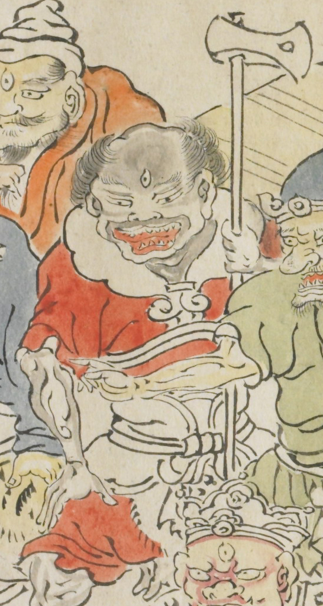

三つ目の鬼。黒い顔で、大きな口を開いている。黒い唇で額はひろい。赤い服を着て斧を持っている。
出典：親書誌：U426_nichibunken_0079：酒天童子絵巻；シュテンドウジエマキ／日付：2006／資源識別子：U426_nichibunken_0079_0003_0009
Copyright (c)2010- International Research Center for Japanese Studies, Kyoto, Japan. All rights reserved.